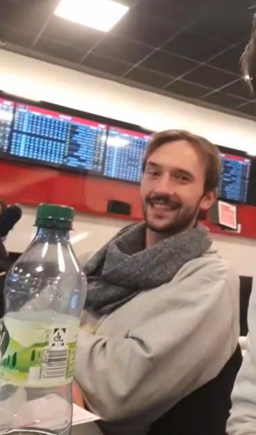

Du stehst im Tipico und siehst Leo am Tisch.

Er dreht sich siegessicher zu dir um: “Alles auf San Marino.” “Wie meinst du das?”, fragst du entsetzt. “Ja ich war vielleicht die letzten 3 Stunden noch Leicester-Fan, doch jetzt geh�rt mein Herz nur noch San Marino. Also habe ich all mein Geld auf die gesetzt. Wird gut gehen, oder?”
Eigentlich müsst ihr schnellstmöglich zur Party, doch das willst du dir nun doch nicht entgehen lassen. Ihr schaut zu, wie San Marino in einem 0:6 gegen die übermächtigen Farßer Inseln unter die Räder kommt. W�hrend du vor Schadenfreude lachst, verlässt Leo niedergeschmettert das Wettbüro. Also du hinter willst, ist er schon weg.
Was macht er wahrscheinlich als Nächstes?